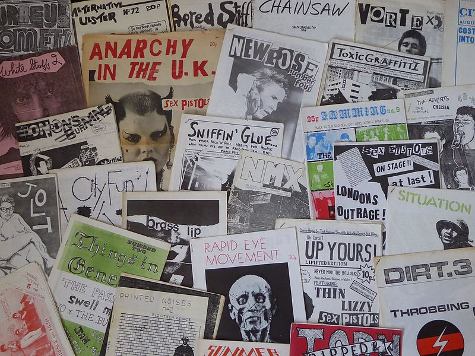
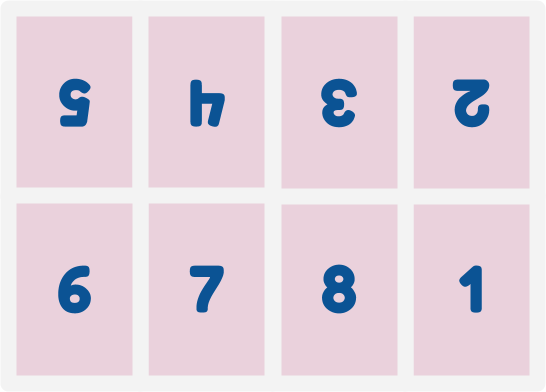
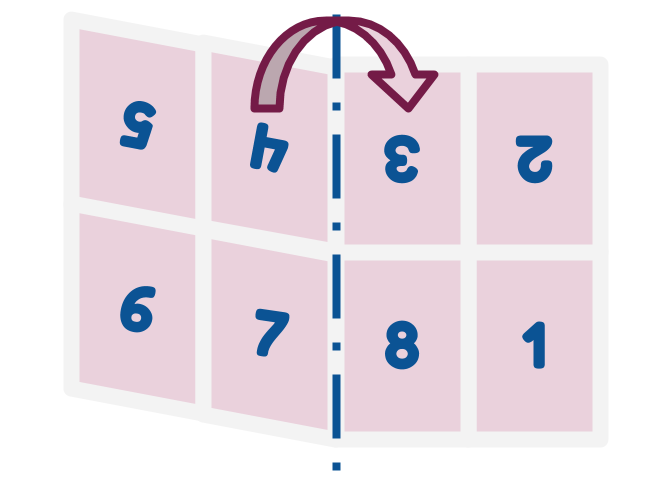
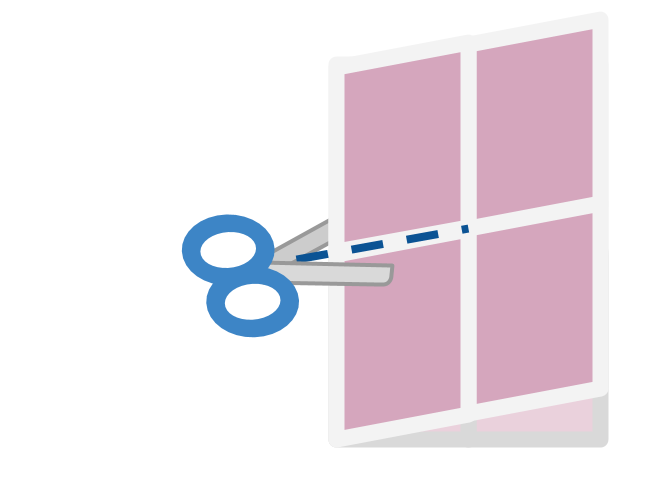
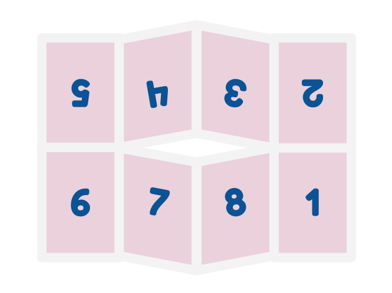
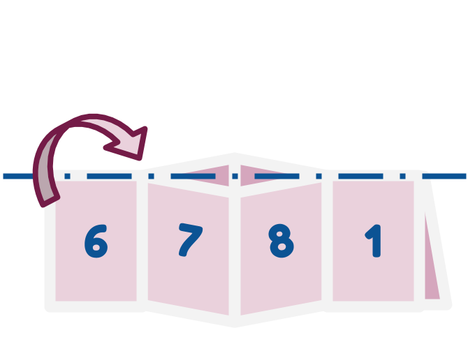
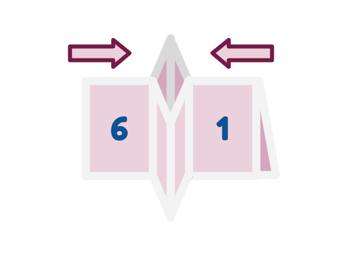
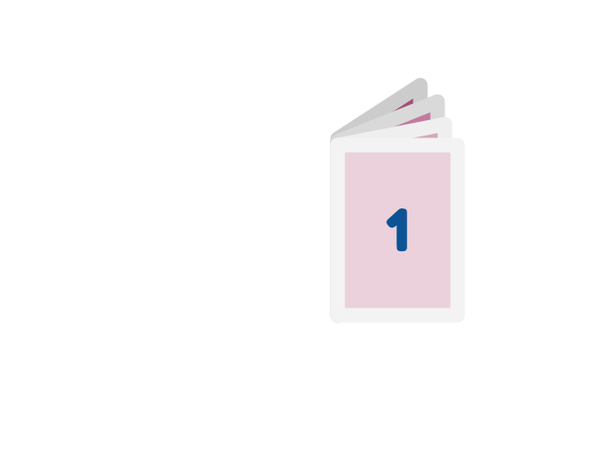

Welcome to the
Zine Machine
Read me 🌐 online or
📃 print ✂️ cut 🙏 fold me 💜
What's a zine?
Zines are little, self-produced publications with a history going back to the 1920s. People used zines to share the content they were passionate about with others and over the years that's been everything from sci-fi, feminism, and rock music. As access to photocopiers and later printers became more widespread, creating a zine was an easy option for almost anyone.

[CC BY 2.0], via Wikimedia Commons
Phones 🤜VS🤛 Zines
Of course, with the Internet everywhere sharing what you care about with the world is even easier… but there's still something nice about a physical thing that you can keep. We benchmarked the world's best phones against the world's best zines for you right here.
| Phones | Zines | |
|---|---|---|
| Battery life | Maybe 6 hours | 600 years |
| Offline content | Mmm, well sometimes | Always |
| When dropped | Smashed to bits | Might get a little dirty |
| Can read in bath | Probably, but risky | Might go a bit crinkly |
| Cost | $1000 | 10¢ |
Zine wins! 💀 PRACTICALITY 💀
We still 💜 webs though, so:
Q: How do we combine these worlds?
A: With the power of CSS!
Making zines on the web 🕸️
That magic is what means this web page is also a zine if you print it! Go ahead, try pressing your button now. You will need to set the page to landscape and make sure there's no margins or scaling. We want to print on the edge, baby! You should see a preview laid out like this:

We're using the template and instructions from: bit.ly/zine-making-on-wikibooks
| Step 1: Crease all the lines then fold in half. |  |
| Step 2: Cut across the fold halfway through the page. |  |
| Step 3: Unfold and there should be a little hole. |  |
| Step 4: Fold lengthways. |  |
| Step 5: Gently fold the centre until you form a + shape. |  |
| Step 6: Now - magic! Fold all the pages around. Page 1 is the front cover, page 8 is the back. |  |
You are now a published author!
The key things we need here are a print-specific layout and CSS grid. Conveniently, (Rachel Andrew) has amazing resources for both:
CSS Grid
The critical components here are the named areas for the grid. We can draw it like a little ascii diagram in our stylesheet.
.zine {
display: grid;
grid-template-areas:
"page-5 page-4 page-3 page-2"
"page-6 page-7 page-8 page-1";
}Then we can position and rotate each of the pages as we need!
.page-5, .page-4, .page-3, .page-2 {
transform: rotate(180deg);
}
.page-1 { grid-area: page-1; }
.page-2 { grid-area: page-2; }
/* You get the idea… */Print styles
We don't need grid layout when in browser, so we're wrapping all of that in a media query.
@media print {
/* Styles in here will only be
applied when printing! */
}We also want to hint to the browser we are using a landscape layout.
@media print {
@page {
size: landscape;
}
}We also don't want links underlined, since, you know, you can't click paper… yet.
a {
color: inherit;
text-decoration: none;
}Swap all kinds of things around for print versus screen. Fill your page with animated gifs, but show a comic strip in print! Use dark mode on screen, but an ink-friendly light theme in print.